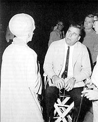
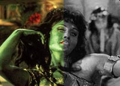
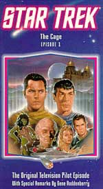
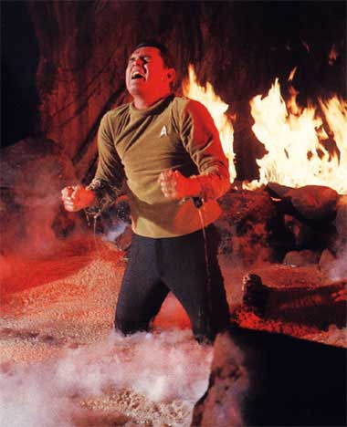
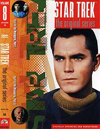
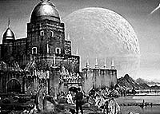

|
por
Luiz Felipe Tavares
Como todos ns sabemos, o primeiro
piloto de Jornada nas Estrelas, "The Cage",
foi rejeitado pela rede NBC, e Gene Roddenberry foi incumbido de
produzir outro piloto, "Where No Man Has Gone Before",
que por sua vez deu origem Srie Clssica como
conhecemos.
Primeiramente necessrio deixar claro que o primeiro piloto,
quando foi produzido, em 1964, era inteiramente a cores, o que era
um luxo para uma produo de televiso naquela poca. Mas qual
foi o destino dado a "The Cage"?
 Como
foi um episdio muito bem produzido e seria um desperdcio deix-lo
no limbo, Gene Roddenberry conseguiu convencer o estdio, Desilu,
a inserir vrias partes do "The Cage" em um episdio
duplo chamado "The Menagerie" ("A Coleo").
Essas cenas que foram introduzidas no episdio duplo foram as nicas
cenas coloridas de "The Cage" que sobreviveram at
hoje; o restante foi dado como perdido durante anos.
A nica verso integral de "The Cage" que
sobreviveu foi uma cpia mal-conservada utilizada na poca das
filmagens originais para auxiliar na edio final. Portanto,
essa cpia no recebeu tratamento final, sendo inteiramente
branco e preto, com pssima qualidade de imagem e som. Era como
se fosse um rascunho. Essa cpia chamada de "workprint"
pelos editores de filmes. Em meados da dcada de 80, a Paramount
dos EUA comeou a lanar os episdios da Srie Clssica
em home video, sendo "The Cage" escolhido para
ser o volume 1. At essa poca o pblico jamais tinha assistido
a esse primeiro piloto de forma integral.
Existem atualmente no mercado internacional trs verses do
primeiro piloto de Jornada nas Estrelas, "The Cage".
Vamos comear pela ordem de lanamento:
Primeira Verso
 Verso
preto e branco e colorida, que consta no catlogo da Srie Clssica
da Paramount Home Video como #1.
Foi a primeira verso do "The Cage" a ser lanada
nos EUA. O episdio foi reconstrudo a partir do "workprint"
original de Gene Roddenberry em branco e preto com cenas coloridas
extradas do episdio duplo "The Menagerie".
Pode-se notar nessa verso que a voz de muitos Talosianos mudam
de repente de uma hora para outra. O motivo que o "workprint"
original com as cenas em preto e branco continha a trilha sonora
original, com as vozes masculinas dos Talosianos. Quando essas
cenas do "The Cage" foram utilizadas em "The
Menagerie", os produtores acharam conveniente redublar as
vozes para que parecessem mais femininas. Alguns efeitos sonoros
tambm foram introduzidos.
 Como
essa verso um remendo de duas cpias de qualidades de udio
e vdeo bem diversas, pode-se notar que o som varia de pssimo
para bom no decorrer da fita, assim como a imagem. Essa edio
jamais foi lanada no Brasil e contm a introduo de Gene
Roddenberry, que a CIC Vdeo erroneamente dizia conter na
primeira verso lanada no Brasil, inteira a cores.
Segunda verso
Verso inteira a cores, que consta no catlogo da Srie Clssica
da Paramount Home Video como #99.

Essa foi a segunda verso lanada nos EUA e a primeira a ser lanada
no Brasil. inteiramente colorida, e a surge um mistrio.
Durante alguns anos a Paramount alegou que no existia nenhuma cpia
do "The Cage" inteiramente colorida que houvesse
sobrevivido.
Eu li alguns anos atrs que essa verso exatamente a mesma da
anterior, s que as cenas em preto e branco foram colorizadas por
computador. H vrios indcios de que tal afirmao seja
verdadeira:
a) a poca do lanamento coincide com o incio da
"heresia" de colorizar por computador filmes
originalmente branco e pretos. Graas a Deus essa mania durou
pouco, pois vrios clssicos do cinema foram comprometidos na poca,
como King-Kong e Casablanca;
b) as cenas que eram branco e preto e que passaram a ser coloridas
possuam uma palheta de cores muito limitada e artificial, o que
tambm condiz com os primrdios da colorizao por computador;
c) o udio dessas cenas ainda era de pssima qualidade e tinha
as vozes originais dos Talosianos, ou seja, era o udio original
das cenas em branco e preto.
At hoje acredito que ningum sabe ao certo a origem dessas
cenas coloridas. S a Paramount sabe o "segredo" e
nunca se manifestou a respeito.
Terceira e ltima verso
Verso inteira em branco e preto.
 Foi
recentemente lanada no Brasil e na Europa. Ainda indita nos
EUA e ser lanada no ltimo volume da Srie Clssica
em DVD.
considerada pela maioria dos fs como a verso mais prxima
possvel do "The Cage" produzido em 1964, mesmo
sem cores, pois a nica que possui a trilha sonora 100%
original, sem as dublagens e efeitos sonoros introduzidas pelo "The
Menagerie". Alem do mais a nica que a imagem estvel
no decorrer da apresentao. As anteriores distraam muito a
ateno nos momentos de transio de uma cena preto e branco
para uma colorida (primeira verso) ou nos momentos em que a
imagem tinha cores muito saturadas e de repente as cores ficavam
fracas e imagem perdia definio (segunda verso).
O problema que essa verso, at agora, possui pssima
qualidade de imagem e som. Ela cheia de arranhes e defeitos
que foram herdados da pelcula original, e som parece de disco de
vinil arranhado. A verso a ser lanada em DVD ser
remasterizada e ser a melhor apresentao de "The Cage"
vista at hoje.
 S
como curiosidade, esse volume da Srie Clssica em DVD
(#40) conter o episdio final da srie, "Turnabout
Intruder", e duas verses diferentes de "The
Cage", a inteiramente branco e preto e a inteiramente
colorida. Ser com certeza um DVD obrigatrio para os fs.
E quem tem a primeira verso em VHS lanada nos EUA, com cenas
misturadas em preto e branco e a cores, melhor guardar, pois
essa verso no ser mais lanada e se tornar uma raridade
com o passar do tempo, por dois motivos: a nica que possui a
introduo de Gene Roddenberry e foi a primeira verso a ser
vista pelo pblico em geral na dcada de 80.
|